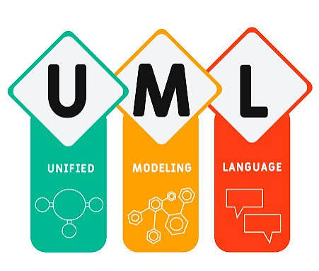
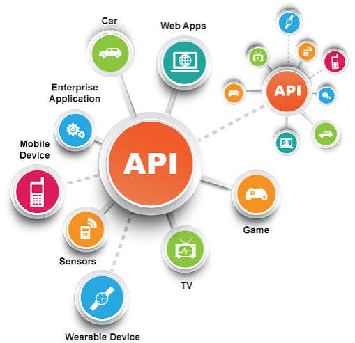
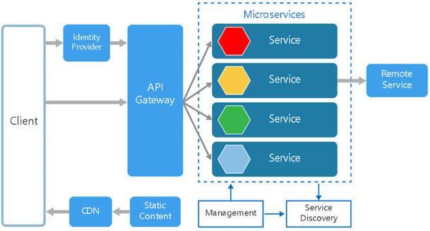

par Pauline lock
Prosit 2.2 Modelisation UML
Le langage de Modelisation Unifie, de l'anglais Unified Modeling Language, est un langage de modelisation graphique a base de pictogrammes concu comme...

par Pauline lock
Le langage de Modelisation Unifie, de l'anglais Unified Modeling Language, est un langage de modelisation graphique a base de pictogrammes concu comme...

par Daryl Noupik
Les API sont principalement axees sur la communication entre applications pour l'acces aux fonctionnalite. L'EDI se concentre sur l'echange de documents...

par Providence Djekoun.
Une architecture de microservices est un type d'architecture d'application dans laquelle l'application est developpee sous la forme d'un ensemble de services...
par Providence Djekoun
L'architecture distribuee ou l'informatique distribuee designe un systeme d'informations ou un reseau pour lequel l'ensemble des ressources disponibles ne se trouvent...